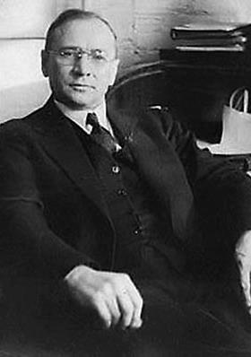

|
|---|
Владимир Козьмич Зворыкин(17 (29) июля 1888, Муром, Владимирская губерния, Российская империя — 29 июля 1982, Принстон, Нью-Джерси, США)Русский инженер и изобретатель. Один из пионеров телевидения.Окончив Муромское реальное училище, в 1906 году Зворыкин поступил в Санкт-Петербургский практический технологический институт и с отличием окончил его в 1912 году с дипломом инженера-технолога. В период обучения на 2 курсе Технологического института Зворыкин участвовал в 1907 г. в проведении первых опытов в области «дальновидения» и электроники под руководством профессора Б. Л. Розинга, что определило выбор будущей сферы деятельности — создание систем электронного телевидения. Осенью 1919 года, во время второй командировки Зворыкина в Нью-Йорк Владимир стал сотрудником Американской компании «Вестингауз», став первым эмигрантом послереволюционнных лет, где занялся любимой темой — передачей изображения на расстояние, однако не нашёл понимания у начальства (отчасти из-за языкового барьера), и продолжил разработки самостоятельно. В 1923 году Зворыкин подал патентную заявку (US2141059 (A) ― 1938-12-20) на телевидение, осуществляемое полностью на электронном принципе. В 1929 году Зворыкин разработал высоковакуумную телевизионную приёмную трубку — кинескоп, к 1931 году завершил создание конструкции передающей трубки — иконоскопа. В июне 1933 года Зворыкин выступил на годичной конференции Американского общества радиоинженеров, где ознакомил присутствующих с вновь созданной электронной телевизионной системой. В 1940-е годы он разбил световой луч на синий, красный и зелёный цвета и таким образом получил цветное телевидение. В. К. Зворыкину принадлежат более 120 патентов на различные изобретения. Он получил большое число различных наград. |
Меню |
Фотография |
©2021 |
|---|